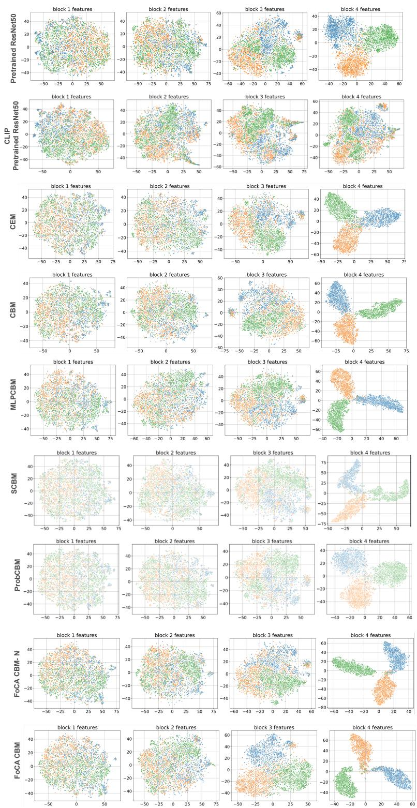

ICML 2026 · P2 · 2026-06-06
Formal Concept Lattices are Good：通用视觉自监督表征常缺少可解释语义层级，这篇给“视觉层级 feature 如何接显式概念结构”提供了可操作框架
不再把 concepts 当作扁平集合，而是让神经网络的视觉 feature hierarchy 与显式语义 hierarchy 对齐。
编号2606.05471
优先级P2
类别ICML 2026
会议arXiv + ICML 2026
方法用 Formal Concept Analysis 构造 concept lattice，将概念从 general 到 specific 的层级映射到网络不同深度，指导 staged semantic representation learning。
来源arXiv / OpenReview
先说结论。通用视觉自监督表征常缺少可解释语义层级，这篇给“视觉层级 feature 如何接显式概念结构”提供了可操作框架。 不再把 concepts 当作扁平集合，而是让神经网络的视觉 feature hierarchy 与显式语义 hierarchy 对齐。


核心问题
通用视觉自监督表征常缺少可解释语义层级，这篇给“视觉层级 feature 如何接显式概念结构”提供了可操作框架。
方法拆解
用 Formal Concept Analysis 构造 concept lattice，将概念从 general 到 specific 的层级映射到网络不同深度，指导 staged semantic representation learning。
主要贡献
不再把 concepts 当作扁平集合，而是让神经网络的视觉 feature hierarchy 与显式语义 hierarchy 对齐。
实验看点
摘要称模型产生更可解释的 embeddings，支持更有效的 interventions，并学习更有层次的概念表示。
局限与读法
依赖概念/属性结构；对纯无监督的大规模图像预训练如何自动构造 lattice 仍是开放问题。